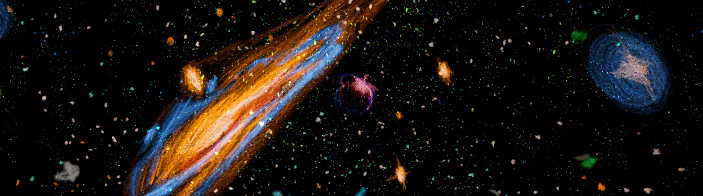
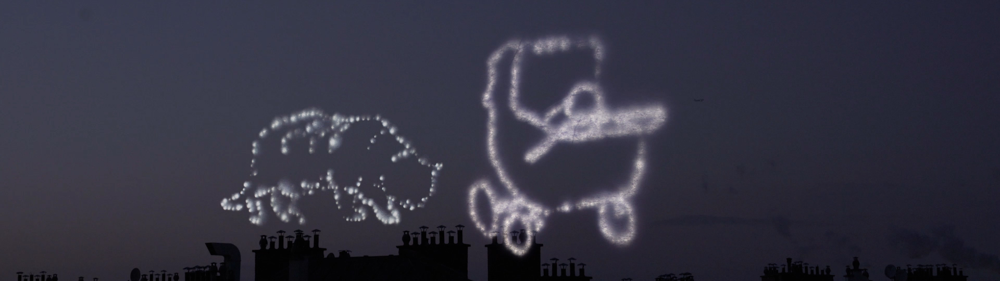
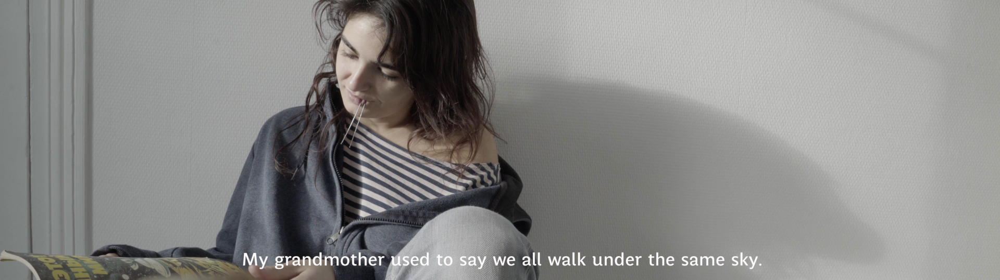

Du corps et du ciel
vidéo, 2020, durée : 15 minutes
La jeune fille est amatrice d’astronomie. Cependant les occasions de partir observer le ciel sont rares : son quotidien est plutôt rythmé par la vie en ville. A la suite de la disparition d’un proche, elle cherche ses repères et sa place dans l’Univers.
___
Journal du bord :
La vie en ville ou la vie à la campagne ?
Les longues nuits passées à animer les séquences manuellement.
Et les étoiles que je voyais en réalisant cette vidéo.



×